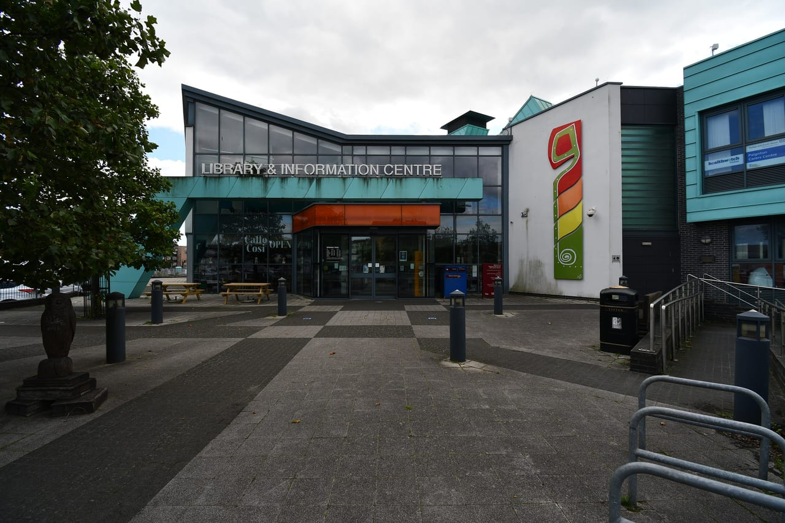
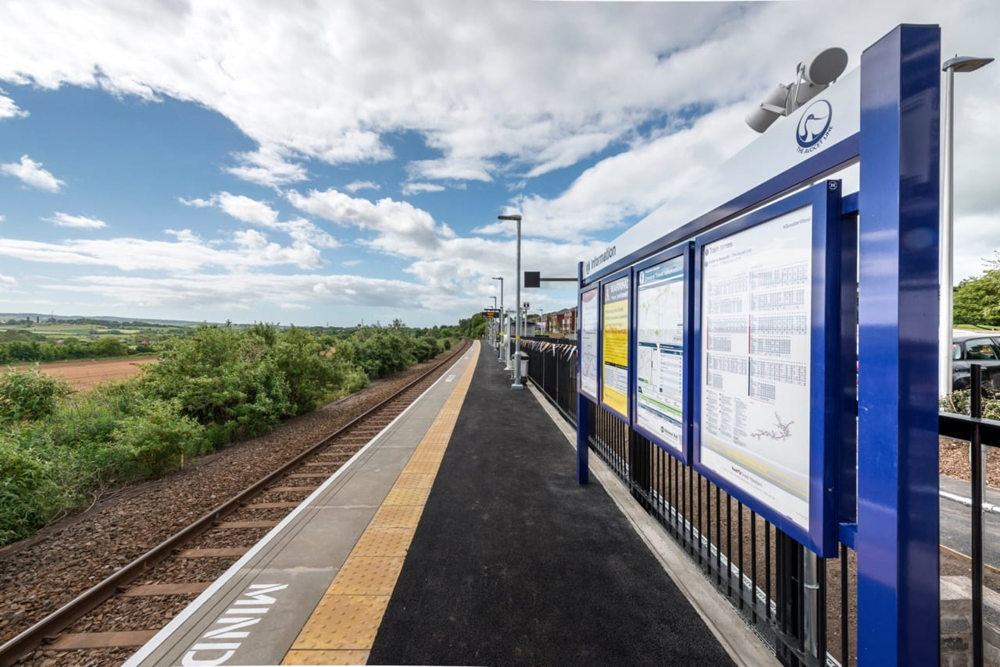
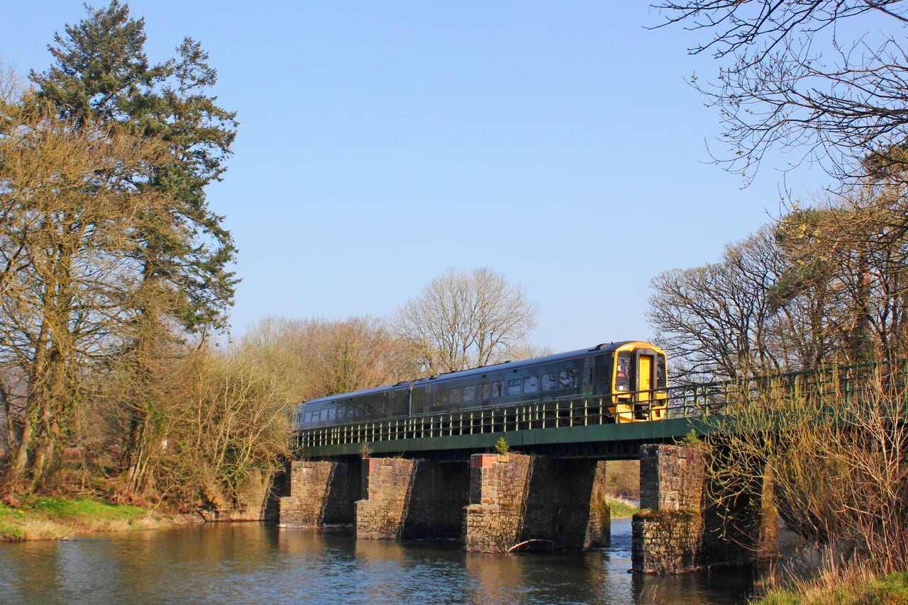

Services
What we design, inspect and administer, for homeowners, contractors, councils and insurers.
Buildings
Structural design of new buildings and work to existing ones, from single houses to multi-storey, commercial and industrial buildings.
- New houses and housing schemes
- Flats and apartment blocks
- Offices, shops and commercial
- Industrial units and warehouses
- Schools and colleges
- Hospitals and healthcare
- Hotels and leisure buildings
- Agricultural buildings
- Steel, timber and masonry frames

Extensions and alterations
The beams, lintels, frames and foundations that extensions, conversions and new openings need.
- House extensions
- Removing loadbearing walls
- Loft conversions
- Garage and barn conversions
- Refurbishment
- Listed and historic buildings
- Building regulations calculations
Foundations and ground
Foundations for new buildings and repairs to old ones, and the walls and slopes that hold the ground back.
- Piled foundations
- Raft foundations
- Underpinning
- Basements
- Retaining walls
- Landslips and slope stability
Civil engineering
For councils, developers, contractors and homeowners, from a single soakaway to adoptable roads.
- Roads and car parks
- Adoptable highways
- Surface water and soakaways
- Sustainable drainage (SuDS)
- Flood risk assessments
- Drainage strategies
- Culverts
- Bridges and footbridges
- Earthworks

Marine and coastal
Inspection, emergency repair after storm damage, strengthening and new works on the coast and in harbours.
- Sea walls and coastal defences
- Revetments and rock armour
- Promenades
- Harbours and quays
- Slipways
- Pontoons and marinas

Temporary works
We have designed hundreds of temporary works schemes for contractors, from a single set of props to cofferdams and façade retention.
- Propping and needling
- Back-propping
- Piling and crane platforms
- Crane bases and outrigger pads
- Excavation and trench support
- Cofferdams
- Façade retention
- Scaffold design checks
- Formwork and falsework
- Hoardings
- Lifting and installation methods
- Demolition plans and sequencing
- Temporary works co-ordination

Surveys and reports
Inspections and reports on existing structures, and the repairs and strengthening that follow, for owners, buyers, insurers and councils.
- Structural and condition surveys
- Reports for house buyers
- Subsidence and movement
- Insurance claims
- Storm, impact and flood damage
- Fire damage assessment
- Crack monitoring
- Dangerous structure call-outs
- Party wall and neighbouring works
- Bridge and harbour inspections
- Concrete repair specifications
- Strengthening of old structures

Rail
Design for Network Rail and its contractors, including work beside lines that stay open to trains.
- Station platforms
- Bridge and viaduct strengthening
- Masonry repairs
- Earthworks
- Maintenance

Contracts and expert witness
We prepare the documents that put work out to tender, administer the contract once it starts, and give expert evidence in disputes.
- Contract documents
- Tender packages
- Contract administration
- Design-and-build and traditional contracts
- Expert witness and dispute reports
Associated practices
Through associated practices we can also arrange ground investigation, materials and contaminants testing, topographical surveys and desk studies.